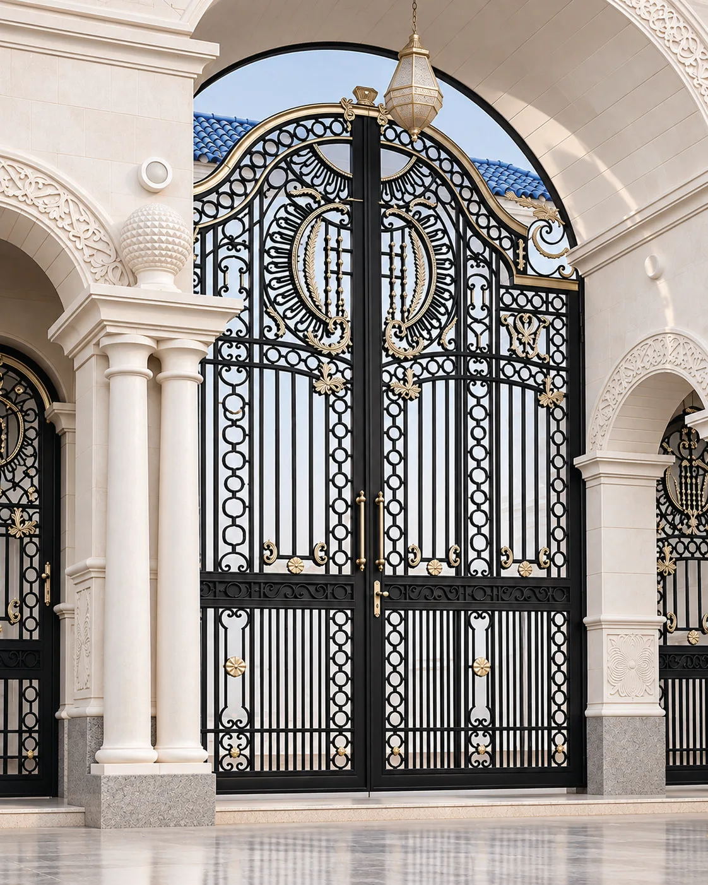
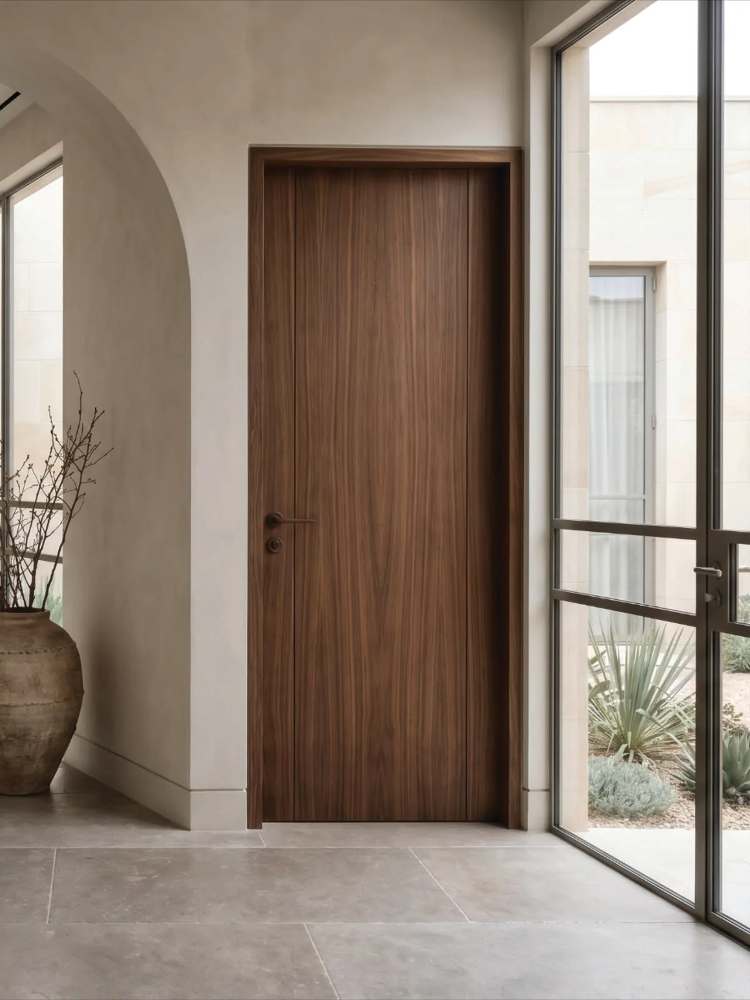
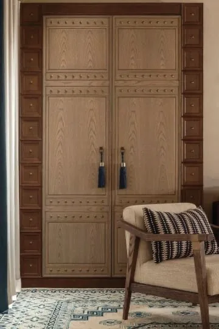
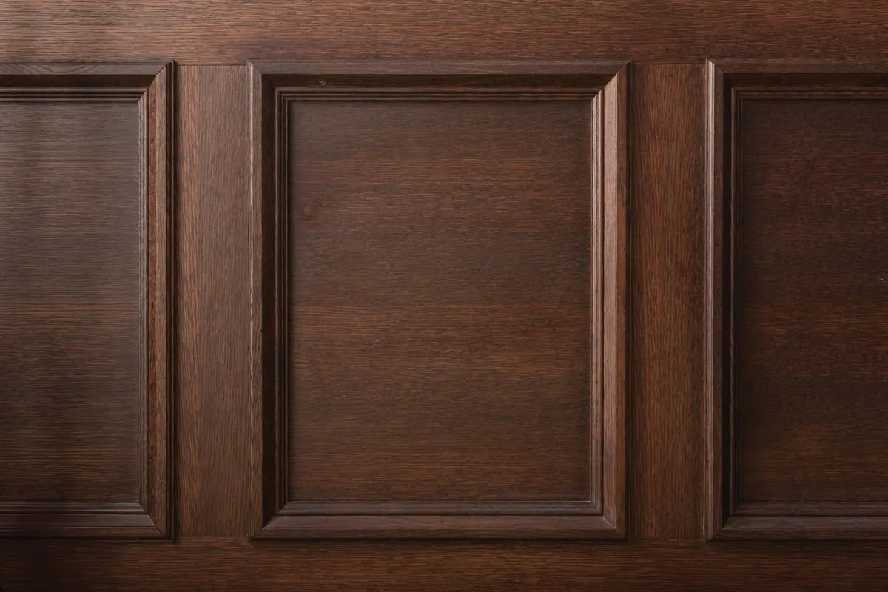
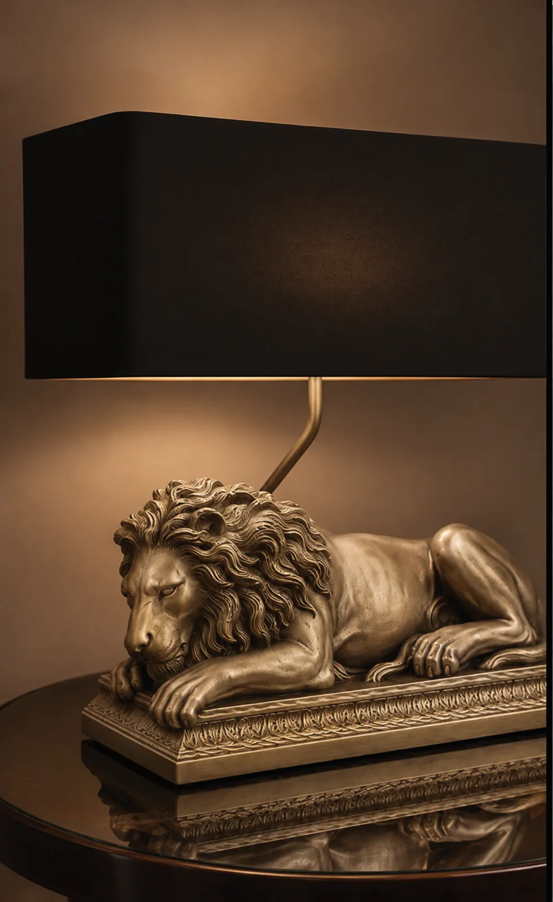
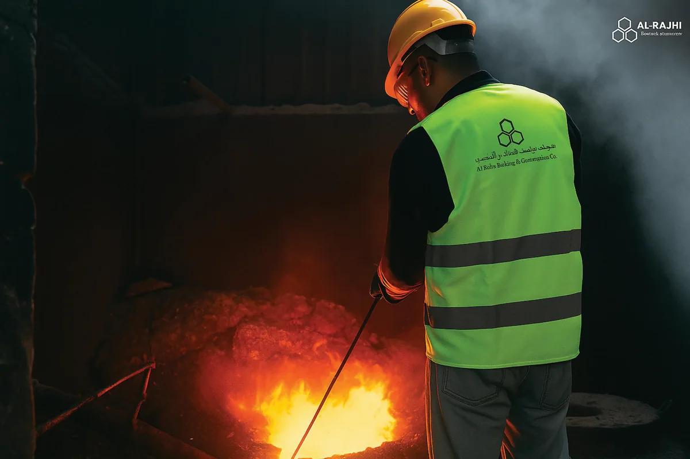
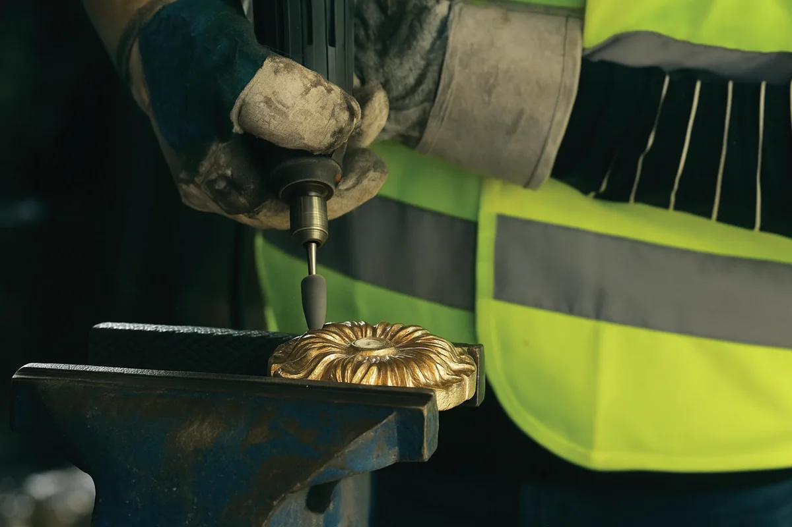

السلطان · حرفية تُرى في التفاصيل
تفاصيل تصنع
الفارق.
من دفء الخشب إلى أصالة المعدن، نصوغ تفاصيل تمنح المساحات هويتها. جودة في المواد، ودقة في التنفيذ، واهتمام بأدق التفاصيل.
أعمال خشبية · أبواب · مسبوكات معدنية


THE ART OF FINE DETAILS
ALSULTAN — A SIGNATURE IN EVERY DETAILمرّر لاكتشاف المزيد ↓
01
الأعمال الخشبية
دفء الخامة. جمال التفاصيل.
02
الأبواب والبوابات
حضور يبدأ من المدخل.
03
المسبوكات المعدنية
حرفية تمنح المعدن روحًا.


MATERIAL. FORM. DETAIL.عن السلطان
للمساحات شخصية.
وللتفاصيل توقيع.
نصمّم وننفّذ الأعمال الخشبية باستخدام خامات عالية الجودة، تجمع بين المتانة وجمال التصميم ودقة التشطيبات، لتناسب المساحات السكنية والتجارية.
جمال يدومخامات تجمع المتانة والأناقة
تنفيذ متكاملمن التصنيع إلى التشطيبات
مجموعة السلطان
خامات مختلفة.
لغة واحدة من الإتقان.
استكشف مجموعة السلطان، من الأبواب والأعمال الخشبية إلى البوابات والقطع المعدنية. اضغط على أي صورة لمشاهدة تفاصيلها.
بوابة بتفاصيل زخرفية
الأبواب والبواباتتكوينات معدنية ذهبية
المسبوكات والتحفأبواب كلاسيكية مزدوجة
الأبواب والأعمال الخشبيةقطعة نحتية معمارية
المسبوكات والتحفالخشب في المساحات الداخلية
الأعمال الخشبيةباب بتشطيب داكن
الأبواب والأعمال الخشبيةبوابة للمدخل الخارجي
الأبواب والبواباتباب بتفاصيل شرقية
الأبواب والأعمال الخشبيةمنحوتة بانسيابية ذهبية
المسبوكات والتحفتشكيل فني مستوحى من الخيل
المسبوكات والتحفتكوين مستوحى من الصقر
المسبوكات والتحفتكوين نحتي معاصر
المسبوكات والتحفقطعة نحتية للمساحات الداخلية
المسبوكات والتحفتفاصيل معدنية للمساحات
المسبوكات والتحفكسوة خشبية بإطارات كلاسيكية
الأعمال الخشبيةتفاصيل الخامة والتشطيب
الأعمال الخشبيةمدخل خشبي بحضور مميز
الأبواب والأعمال الخشبيةأعمال خشبية للمجالس
الأعمال الخشبية6 من 19 عملًا

مسبوكات معدنية · تفاصيل تصنع الحضورمسبك السلطان
نمنح المعدن
قيمة تدوم.
من أكثر من ٣٠ سنة، ومسبك السلطان يصنع الفرق في عالم المسبوكات المعدنية. بخبرة تجمع بين الجودة والدقة وأحدث التقنيات، نقدّم منتجات بمعايير عالية وحلولًا موثوقة تلبي احتياجات السوق السعودي وتنافس عالميًا.
30+عامًا من الخبرة
في المسبوكات المعدنية
استكشف القطع المعدنية في المسبوكات المعدنية
قدراتنا في التصنيع والتشطيب
من الخام…
إلى أدق التفاصيل.
حلول متكاملة في التصنيع والتشطيبات، وعناية بكل مرحلة.


01صب النحاس والألمنيوم
أعمال صب النحاس والألمنيوم لإنتاج المسبوكات والقطع المعدنية.
02التغطيس بلون ذهبي
التغطيس للحصول على لون ذهبي خالص للمنتجات.
03إنتاج القطع حسب الطلب
إنتاج القطع حسب الطلب وبمواصفات خاصة لتناسب متطلبات كل قطعة.
04تشكيل وتعديل القطع المعدنية
تشكيل وتعديل القطع المعدنية مع الاهتمام بأدق التفاصيل.
05الطلاء والمعالجة ضد التآكل
طلاء ومعالجة المسبوكات ضد التآكل ضمن أعمال التشطيب.
توقيع السلطان
جودة في المواد. دقة في التنفيذ.
واهتمام بأدق التفاصيل.
اكتشف الخامات والتفاصيل التي تمنح مساحتك طابعها الخاص.
العودة إلى المجموعة